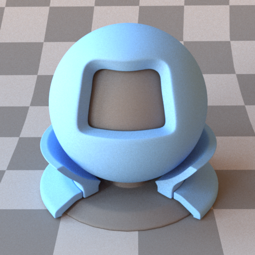
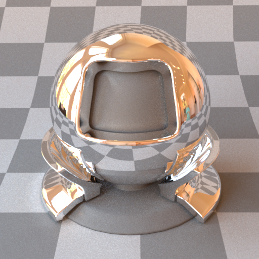
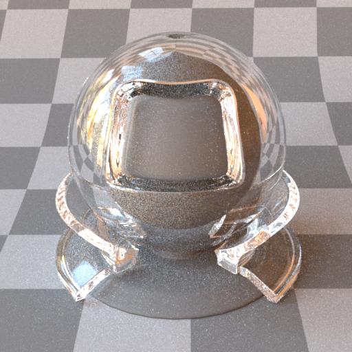
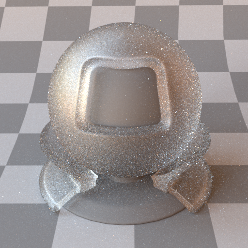
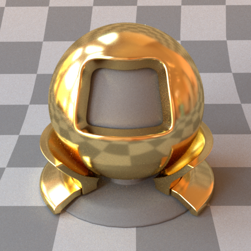
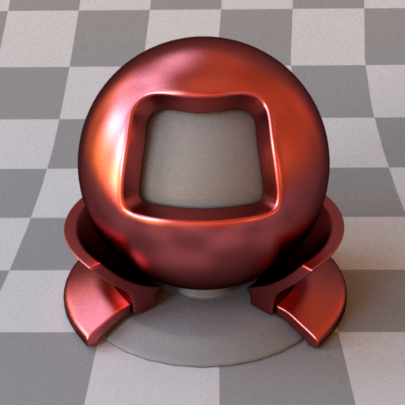
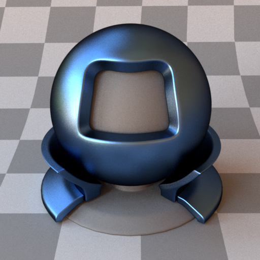
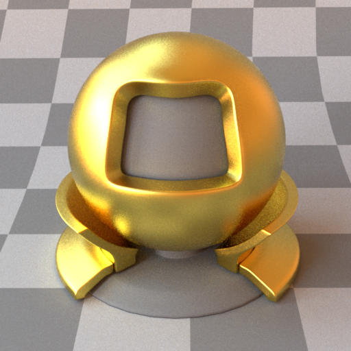
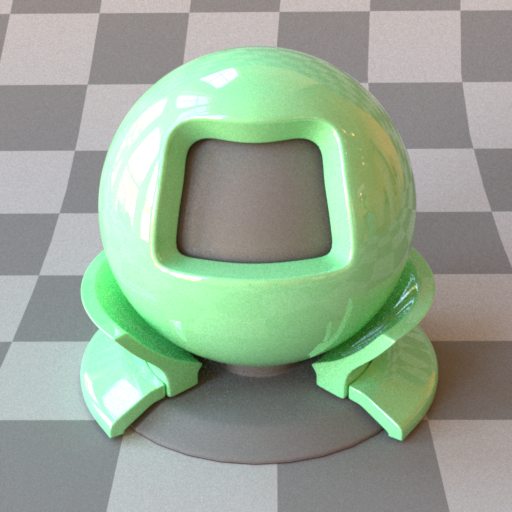

BSDFs
Materials are attached to shapes either inline or via a named reference. A named BSDF is declared at the top level with an id attribute and referenced from shapes using <ref id="..."/>.
Each material below shows a preview rendered on the standard material-test ball under an environment map (the matpreview scene). Regenerate the swatches with python3 .verify/render_matpreview_gallery.py.
Diffuse — type="diffuse"
Lambertian (perfectly diffuse) reflectance. Scatters light equally in all directions above the surface. The surface colour can be specified as a constant RGB value or as a bitmap texture. An optional normal map adds tangent-space surface detail without extra geometry.

Parameters
| Name | Type | Default | Description |
|---|---|---|---|
reflectance |
rgb or bitmap | 0, 0, 0 |
Diffuse albedo. Values should be in [0, 1]. |
normalmap |
bitmap | (none) | Tangent-space normal map. RGB image encoded as [0,1] → [-1,1]. |
Examples
Constant colour:
<bsdf type="diffuse" id="white_wall">
<rgb name="reflectance" value="0.8, 0.8, 0.8"/>
</bsdf>
Bitmap texture:
<bsdf type="diffuse" id="wood_floor">
<texture type="bitmap" name="reflectance">
<string name="filename" value="textures/wood.png"/>
</texture>
</bsdf>
Texture + normal map:
<bsdf type="diffuse" id="stone">
<texture type="bitmap" name="reflectance">
<string name="filename" value="textures/stone_albedo.png"/>
</texture>
<texture type="bitmap" name="normalmap">
<string name="filename" value="textures/stone_normal.png"/>
</texture>
</bsdf>
Image textures are expected in sRGB space and are linearised on load. UV coordinates come from the mesh; OBJ files supply them via vt entries.
Mirror / Conductor — type="mirror" / type="conductor"
A perfect specular reflector (the two type names are equivalent). Reflects every incident ray into the mirror direction with no roughness. This is a delta BSDF — it has no diffuse component and contributes nothing to direct illumination samples.

Parameters
| Name | Type | Default | Description |
|---|---|---|---|
reflectance |
rgb | 1, 1, 1 |
Spectral tint applied to reflections. Use 1, 1, 1 for a neutral silver mirror. |
Example
<bsdf type="mirror" id="silver">
<rgb name="reflectance" value="0.9, 0.9, 0.9"/>
</bsdf>
Dielectric — type="dielectric" / type="glass"
A smooth dielectric interface (e.g. glass, water, crystal) governed by Fresnel equations. Both reflection and refraction are simulated, including total internal reflection. The surface has no diffuse component.

Parameters
| Name | Type | Default | Description |
|---|---|---|---|
intIOR or ior |
float | 1.5 |
Index of refraction of the medium inside the surface. The exterior is assumed to be air (IOR = 1.0). |
Common IOR values: glass ≈ 1.5, water ≈ 1.33, diamond ≈ 2.42.
Example
<bsdf type="dielectric" id="glass_sphere">
<float name="intIOR" value="1.5"/>
</bsdf>
<!-- water surface -->
<bsdf type="glass" id="water">
<float name="ior" value="1.33"/>
</bsdf>
Rough dielectric — type="roughdielectric" / type="roughglass"
A GGX microfacet dielectric: frosted glass that both reflects and refracts through a rough interface. Smaller alpha approaches a smooth dielectric.

Sampling: micro-normals are drawn from the full GGX NDF (Walter et al. 2007), not from the distribution of visible normals (vNDF, Heitz 2018). vNDF sampling never generates back-facing microfacets and collapses the throughput weight to the masking-shadowing ratio
G₂/G₁, which would noticeably cut variance here — especially at higheralpha.
Parameters
| Name | Type | Default | Description |
|---|---|---|---|
intIOR or ior |
float | 1.5 |
Interior index of refraction (exterior is air). |
alpha |
float | 0.1 |
GGX roughness parameter. |
specularReflectance |
rgb | 1, 1, 1 |
Spectral tint applied to the interface. |
Example
<bsdf type="roughdielectric" id="frosted_glass">
<float name="intIOR" value="1.5"/>
<float name="alpha" value="0.2"/>
</bsdf>
Rough conductor — type="roughconductor" / type="roughplastic"
A GGX microfacet BSDF modelling a rough reflective surface. The distribution of microfacet normals follows the GGX (Trowbridge-Reitz) model. Increasing alpha makes the surface appear more matte.

Parameters
| Name | Type | Default | Description |
|---|---|---|---|
eta or reflectance |
rgb | 0.8, 0.8, 0.8 |
Spectral reflectance tint. |
alpha |
float | 0.3 |
GGX roughness parameter. Range (0, 1]: 0.01 is near-mirror, 0.8 is very rough. |
Example
<bsdf type="roughconductor" id="brushed_gold">
<rgb name="eta" value="1.0, 0.77, 0.33"/>
<float name="alpha" value="0.15"/>
</bsdf>
Phong / Blinn — type="phong" / type="blinn" / type="blinn_microfacet"
Classic glossy reflectance models driven by a specular exponent (the cosine-power; higher = sharper highlight). phong and blinn are the energy-normalised lobes; blinn_microfacet uses the Blinn distribution in a microfacet formulation.
phong |
blinn |
blinn_microfacet |
|---|---|---|
 |
 |
 |
Parameters
| Name | Type | Default | Description |
|---|---|---|---|
reflectance |
rgb or bitmap | 0.8, 0.8, 0.8 |
Diffuse/specular base colour. |
exponent |
float | 50 |
Glossy exponent; larger is shinier. |
Example
<bsdf type="blinn" id="glossy_red">
<rgb name="reflectance" value="0.7, 0.1, 0.1"/>
<float name="exponent" value="120"/>
</bsdf>
Plastic — type="plastic"
A smooth coated diffuse surface: a Fresnel-weighted specular coat over a diffuse substrate.

Parameters
| Name | Type | Default | Description |
|---|---|---|---|
reflectance |
rgb or bitmap | 0.5, 0.5, 0.5 |
Diffuse substrate colour. |
eta, intIOR, or int_ior |
float | 1.5 |
Index of refraction of the dielectric coat. |
nonlinear |
boolean | false |
Enable Mitsuba's coloured internal-scattering model. |
Example
<bsdf type="plastic" id="red_plastic">
<rgb name="reflectance" value="0.8, 0.1, 0.1"/>
<float name="intIOR" value="1.49"/>
</bsdf>
Emitter BSDF — type="emitter" / type="area"
Marks a surface as a light source when declared as a named BSDF. This is equivalent to the inline <emitter type="area"> syntax but allows the emissive material to be reused across multiple shapes.
Parameters
| Name | Type | Default | Description |
|---|---|---|---|
radiance or emission |
rgb | 1, 1, 1 |
Emitted radiance. |
Example
<bsdf type="emitter" id="ceiling_light">
<rgb name="radiance" value="10, 8, 6"/>
</bsdf>
<shape type="rectangle">
<transform name="toWorld">
<scale x="0.5" y="0.5" z="0.5"/>
<translate x="0" y="2.5" z="0"/>
<rotate angle="90" x="1"/>
</transform>
<ref id="ceiling_light"/>
</shape>
Two-sided wrapper — type="twosided"
A Mitsuba compatibility wrapper. Kestrel's BSDFs are already evaluated on both faces, so a <bsdf type="twosided"> is transparently unwrapped to its inner BSDF — you can leave the wrapper in imported scenes without effect.
<bsdf type="twosided" id="wall">
<bsdf type="diffuse">
<rgb name="reflectance" value="0.8, 0.8, 0.8"/>
</bsdf>
</bsdf>